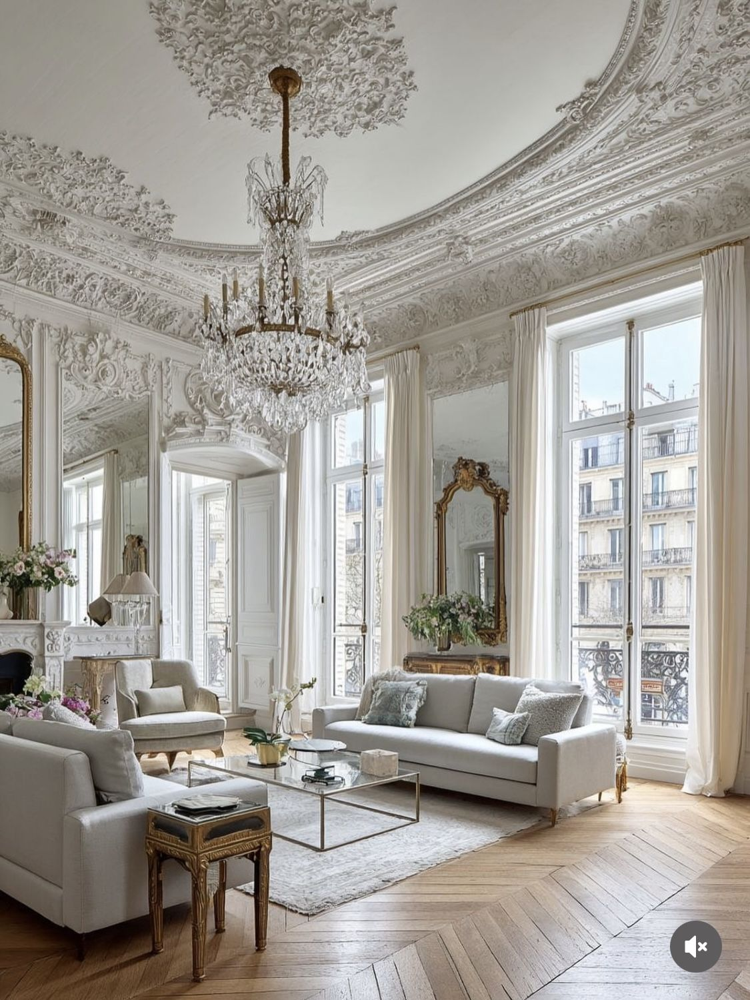
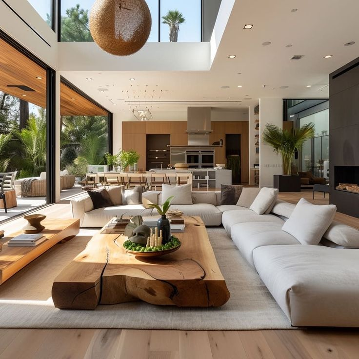
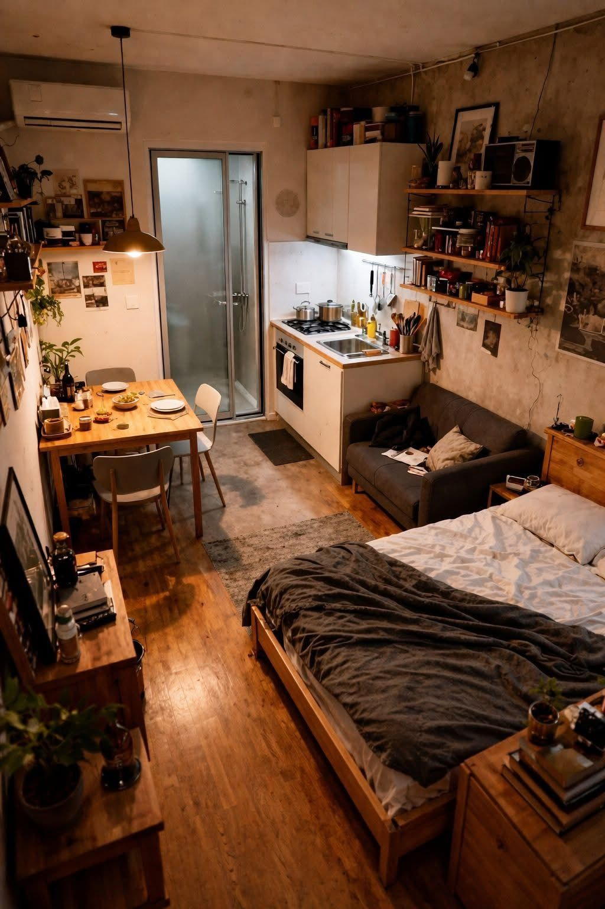
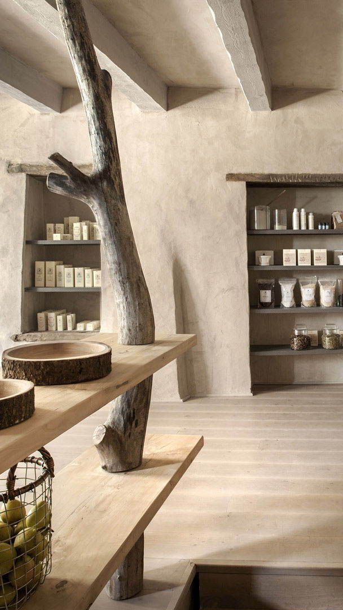

    <section class="realisations">
        <div class="container">
            <h2>Nos réalisations</h2>


            <div class="realisationwrap">

                <div class="card">
                    <div class="cardimage">
                        
                    </div>
                    <div class="contenu">
                        <h3>Appartement Haussmannien – Lyon 6e</h3>
                        <p>Rénovation complète d’un appartement de 120 m² : ouverture des espaces, mise en valeur des
                            moulures et création d’une cuisine contemporaine contrastée.</p>
                    </div>

                </div>


                <div class="reversecard">
                    <div class="cardimage">
                        
                    </div>
                    <div class="contenu">
                        <h3> Maison contemporaine – Annecy</h3>
                        <p>Aménagement intérieur complet : création d’un grand espace de vie traversant, matériaux
                            naturels et mobilier sur mesure en bois clair.</p>
                    </div>

                </div>


                <div class="card">
                    <div class="cardimage">
                        
                    </div>
                    <div class="contenu">
                        <h3>Studio étudiant – Villeurbanne</h3>
                        <p>Optimisation d’un petit espace de 25 m² avec mobilier modulable et ambiance minimaliste
                            chaleureuse.</p>
                    </div>

                </div>


                <div class="reversecard">
                    <div class="cardimage">
                        
                    </div>
                    <div class="contenu">
                        <h3>Boutique artisanale – Croix-Rousse</h3>
                        <p>Transformation d’un ancien atelier en boutique lumineuse : jeu de textures entre béton ciré,
                            bois brut et verrières d’atelier.</p>
                    </div>

                </div>
            </div>
        </div>
    </section>


    img.imgrea1 {
    width: 50vh;
    height: 60vh;
}

.realisationimg1 {
    display: flex;
    flex-direction: column;
}

.realisationwrap {
    display: flex;
    flex-direction: column;
    gap: 40px;
}

.card {
    display: flex;
    gap: 20px;
    align-items: center;
}

.reversecard {
    flex-direction: row-reverse;
}

.cardimage {
    width: 180px;
    height: 180px;
    flex-shrink: 0;
    overflow: hidden;
}

.realisationimg {
    width: 200px;
    height: 200px;
    object-fit: cover;
}

.reversecard {
    flex-direction: row-reverse;
}